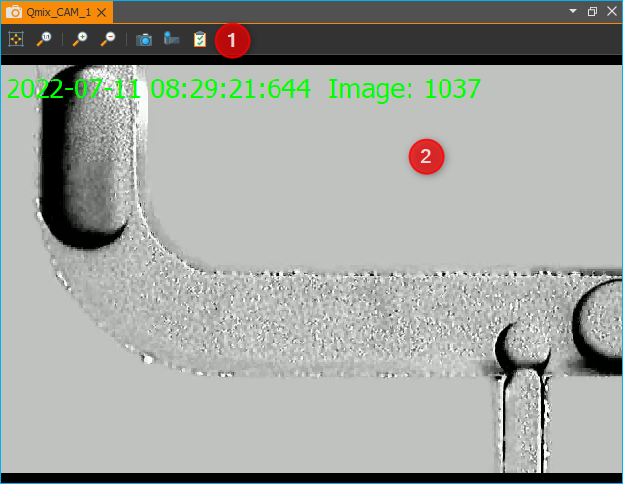
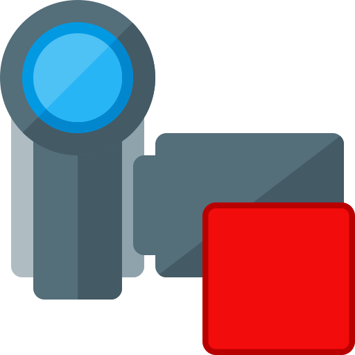

15. Kamera Plugin
15.1. Einführung
Das Kamera Plugin ermöglicht die Einbindung unterschiedlichster digitaler Kameras in die Software. Das Plugin unterstützt u.a. Firewire 1394 Kameras (DCAM Standard), verschiedene USB-Kameras und alle Standard Windows DirectShow Kameras.

Für jedes Kameragerät bietet die Software eine separate Live-Ansicht ❶, die das aktuelle Live-Kamerabild zeigt. Der Bildbetrachter / Bildanalyse View ❷ zeigt die von den Kamerageräten erfassten Bilder zur Analyse oder Speicherung in Dateien.
15.2. Kamera-Livebild
15.2.1. Übersicht
Das Kamera-Livebild wird in einem View angezeigt. D.h., das Kamera-Livebild können Sie durch Anklicken und Ziehen der Titelleiste vollständig aus dem Hauptfenster der Applikation herauslösen und so z.B. auf einem zweiten Monitor platzieren und dort maximieren. So haben Sie stets das volle Kamerabild im Blick und können auf dem anderen Monitor in der Software bequem alle Einstellungen ändern.
Werkzeugleiste
Kamera-Livebild
Sie können die Livebildansicht für ein bestimmtes Kameragerät über den Hauptmenüpunkt aufrufen.
15.2.2. Werkzeugleiste
Ihnen stehen verschiedene Werkzeuge zur Verfügung um die Anzeige des Kamerabildes oder Kameraeinstellungen zu verändern. Diese Werkzeuge sind über die Werkzeugleiste am oberen Fensterrand erreichbar.
Folgende Schaltflächen sind in der Werkzeugleiste enthalten:
|
Bild in Fenster einpassen – Skaliert das Bild so, dass es vollständig in die Anzeige passt |
|
Digitale Vergrößerung erhöhen |
|
Digitale Vergrößerung erhöhen |
|
Digitale Vergrößerung verringern |
Bild aufnehmen |
|
|
Video aufnehmen |
|
Dialog zur Konfiguration der Kameraparameter öffnen |


15.2.3. Vergrößerung einstellen
Die digitale Vergrößerung können Sie auf 3 verschiedene Arten einstellen:
Werkzeugleiste – klicken Sie auf die Schaltflächen in der Werkzeugleiste um die Vergrößerung in festen Stufen zu ändern
Kontextmenü – klicken Sie mit der rechten Maustaste in das Kamerabild und wählen Sie dann die entsprechenden Menüpunkte im angezeigten Kontextmenü, um die Vergrößerung zu verändern
Mausrad – ändern Sie die Vergrößerung stufenlos mit dem Mausrad
|
|
Vergrößerungsfaktor erhöhen (hineinzoomen) |
|
|
Vergrößerungsfaktor verringern (heraus zoomen) |


{kind=link}
15.2.4. Manuelle Bildaufnahme
Um das aktuelle Kamerabild aufzunehmen, klicken Sie das Symbol Capture Image in der Werkzeugleiste an. Das aktuelle Kamerabild wird dann im Bildbetrachter der Software gespeichert und kann dort von Ihnen weiter verarbeitet werden.
15.2.5. Manuelle Videoaufnahme

Wenn Sie das aktuelle Kamera-Livebild als Video aufnehmen möchten, drücken Sie einfach die Schaltfläche Record Video. Die Videoaufzeichnung bleibt so lange aktiv, bis Sie diese durch erneutes Anklicken der Schaltfläche Record Video stoppen.
|
Videoaufzeichnung inaktiv |
Videoaufzeichnung aktiv |
{kind=link}
Über das Ereignisprotokoll der Anwendung erhalten Sie Statusinformationen zur Aufzeichnung und zum Dateinamen unter dem die Videodatei gespeichert wurde.

Der Dateiname
jeder Videodatei wird mit einem Zeitstempel des Starts der Aufzeichnung
versehen. D.h. der Start der Aufzeichnung der Videodatei
Camera_Recording_20220711_104731.avi war am 11.07.2022 um 10:47
Uhr.
Wichtig
Zur Aufzeichnung der Videos wird der XVID-CoDec verwendet. Wenn Sie die Datei mit Ihrem Mediaplayer abspielen möchten, sollte dieser CoDec unterstützt werden oder auf Ihrem System installiert sein.
15.3. Kamera Einstellungen
15.3.1. Einführung
Die Qualität eines aufgenommenen Bildes wird beeinflusst durch eine an das Beobachtungsobjekt angepasste Beleuchtung und die richtige Einstellung der Kamera-Parameter. Im Folgenden geben wir Ihnen einen Überblick über die wichtigsten Kamera-Parameter die mit der Software verändert werden können.

Das Fenster zur Einstellung der Kameraparameter öffnen Sie über die Schaltfläche Camera Settings in der Werkzeugleiste des Kamera-Livebildes.

Exposure Settings - zum Festlegen der Belichtungseinstellungen
Camera Features - zum Anpassen der allgemeinen Kameraeinstellungen
Wichtig
Je nach verwendetem Kameratyp (Direct Show, USB oder Firewire) oder Kameramodell kann sich die Darstellung des Camera Settings Dialogs mehr oder weniger stark unterscheiden.
Wichtig
Einige Kameras werden nicht durch den Camera Settings Dialog unterstützt und blenden zur Konfiguration ggf. ihr eigenes kameraspezifisches Konfigurationsfenster ein.
15.3.2. Belichtungsparameter einstellen
Im Bereich Exposure Settings legen Sie die Belichtungszeit des CCD in der Kamera fest. Die Belichtungszeit kann manuell oder automatisch eingestellt werden. Wenn die automatische Einstellung aktiv ist (Auto Exposure), wird der Verschlusszeit automatisch an die Helligkeit des Beobachtungsobjektes angepasst.
15.3.3. Kamera-Features einstellen
Im Bereich Camera Features können Sie alle Einstellungen der in Ihrem System eingebauten Kamera verändern. Die Kamera-Features und deren Wertebereiche können je nach verwendetem Kameratyp variieren.

Wenn ein Kamera-Feature einen automatischen Modus unterstützt, so können Sie zwischen manuellem und automatischem Modus umschalten ❶. Im manuellen Modus können Sie dann Wert über den Schieberegler oder das Werteingabefeld manuell einstellen ❷.
Wichtig
Je nach verwendetem Kameratyp können sich die Einstellmöglichkeiten und Anzahl der konfigurierbaren Kamerafeatures unterscheiden.
15.4. Kamera Script-Funktionen
15.4.1. Einführung
Das Kamera-Plugin enthält verschiedene Script-Funktionen zur Aufzeichnung von Videos und Einzelbildern.

15.4.2. Einzelbildaufnahme – Capture Image
Mit dieser Funktion können Sie ein Einzelbild des aktuellen Kamerabildes aufnehmen, und auf einem Datenträger speichern ❶. Im Konfigurationsbereich der Funktion Image File ❷ geben Sie dafür den Dateipfad und den Namen der Bilddatei an. Anschließend können Sie festlegen, ob die Kameraparameter vor der Aufnahme unverändert gelassen werden (❷ Keep Camera Settings) oder ob die Kameraparameter auf vorher gespeicherten Werte eingestellt werden (❸ Change Camera Settings).
Die aktuellen Kameraparameter können durch Drücken der Schaltfläche in Capture current settings als Parameter in der Funktion gespeichert werden, um sie dann vor der Bildaufnahme wieder in die Kamera schreiben zu können. Damit können Sie z.B. unterschiedliche Objekte mit völlig verschiedenen Kameraeinstellungen aufnehmen.
Tipp
Durch die Dateiendung der Bilddatei (.png oder
.jpg) können Sie das entsprechende Bildformat auswählen.
Bei jeder Aufnahme wird ein Zeitstempel an den Dateinamen angehängt.
D.h. Wenn Sie z.B. als Dateinamen Photo.jpg konfiguriert haben, wird
auf dem Datenträger dann z.B. die Datei Photo_20120921_154502.jpg nach dem
Syntax Name_YYYYMMDD_hhmmss.jpg gespeichert.
Tipp
Sie können in festen zeitlichen Intervallen Bilder von einem Objekt aufnehmen, um daraus mit dem Video Builder später einen Zeitrafferfilm zu erstellen.
15.4.3. Videoaufzeichnung starten – Start Video Recording
{kind=link}
Mit dieser Funktion starten Sie die Aufzeichnung des Kamera-Livebildes in eine Videodatei. Die Aufzeichnung ist so lange aktiv, bis sie mit der Funktion Videoaufzeichnung beenden gestoppt wird. Die Videoaufzeichnung wird automatisch gestoppt, wenn die Skriptausführung endet.
Im Konfigurationsbereich konfigurieren Sie alle Parameter für die Videoaufzeichnung. Im Feld Recording Session Name ❶ vergeben Sie einen eindeutigen Namen für diese Aufnahmesitzung. Dieser Name wird benötigt, um die Sitzung später mit der Funktion Videoaufzeichnung beenden stoppen zu können.

Video-Einstellungen konfigurieren
Im Bereich Video Settings konfigurieren Sie nun alle Video-Einstellungen. Klicken Sie die Schaltfläche mit dem Ordnersymbol ❷ an, um einen Dateinamen und Speicherort für die Videodatei im Feld Video Filename zu wählen.
Wichtig
Bei jeder Aufnahme wird ein Zeitstempel an
den Dateinamen angehängt. D.h. Wenn Sie z.B. als
Dateinamen Video.avi konfigurieren, wird auf dem
Datenträger die Datei Video_20130522_154502.avi
gespeichert.
Durch Anklicken von Extended Settings ❸ können Sie weitere Einstellungen einblenden. Im Feld Recording Frames per Second stellen Sie die Anzahl der Bilder ein, die pro Sekunde aufgezeichnet werden sollen. Um später eine Echtzeitdarstellung zu erhalten, sollten Sie die aktuelle Kamera-Bildrate verwenden.
Tipp
Wenn Sie die Funktion neu erstellen, wird im Feld Recording Frames per Second stets die aktuelle Kamera-Bildrate eingetragen.
Wenn Sie langsamere Prozesse beobachten möchten, können Sie auch eine kleinere Bildrate für die Aufzeichnung wählen. Wenn Sie das Eingabefeld Recording Seconds per frame aktivieren, können Sie sehr langsame Aufzeichnungsraten wählen (mehreren Sekunden oder Minuten pro Bild).
Dieser Modus eignet sich zur Erstellung von Zeitrafferaufnahmen von sehr langsamen Vorgängen. So können Sie z.B. über mehrere Tage, aller 30 Minuten ein Bild aufnehmen, und diese Aufnahmen dann in einem Film mit einer Bildrate von 24 Bildern pro Sekunde abspielen.
Im Feld Playback Frame Rate (fps) stellen Sie die Bildrate ein, mit der der Film später im Mediaplayer wiedergegeben wird. Im Bereich Videoproduktion oder Kinofilm ist eine Bildrate von 24 Bildern pro Sekunde Standard. Wenn Sie den Film in Echtzeit, d.h. mit seiner realen Aufnahmegeschwindigkeit wiedergeben wollen, sollten Sie hier eine Bildrate wählen, die der Aufzeichnungsbildrate entspricht.
Kamera-Einstellungen konfigurieren
Klicken Sie auf den Karteireiter Camera Setup ❶ um die Bedienelemente zur Einstellung der Kamera-Parameter anzuzeigen.:
Hier können Sie festlegen, ob die Kameraparameter vor der Aufnahme unverändert gelassen werden ❷ Keep Camera Settings oder ob die Kameraparameter auf vorher gespeicherten Werte eingestellt werden ❸ Change Camera Settings.
Die aktuellen Kameraparameter können durch Drücken der Schaltfläche in Capture current settings als Parameter in der Funktion gespeichert werden, um sie dann vor der Bildaufnahme wieder in die Kamera schreiben zu können. Damit können Sie z.B. unterschiedliche Objekte mit völlig verschiedenen Kameraeinstellungen aufnehmen.
15.4.4. Videosequenz aufnehmen – Record Video Sequence
{kind=link}
Verwenden Sie diese Funktion, um eine Videosequenz mit einer festgelegten Dauer aufzuzeichnen. In der Skriptfunktion konfigurieren Sie die gewünschte Aufnahmedauer, und die Aufnahme endet automatisch, nach dem Ablauf der Aufnahmezeit.
Alle Videoeinstellungen und Kameraeinstellungen dieser Skript-Funktion sind identisch mit den Einstellungen der Funktion Videoaufzeichnung starten. Zusätzlich können Sie bei dieser Funktion aber noch die Aufnahmedauer einstellen.

Wählen Sie dafür den Karteireiter Rec. Duration ❶. Nun können Sie die Aufnahmedauer sekundengenau einstellen ❷. Mit dem Auswahlfeld Run to completion ❸ legen Sie fest, wann die Funktion beendet ist und die nächste Skriptfunktion ausgeführt wird:
Auswahlfeld aktiv - die nächste wird Funktion erst ausgeführt, wenn die Aufnahme abgeschlossen ist
Auswahlfeld inaktiv - die Aufnahme wird gestartet und dann sofort die Skriptausführung mit der nächsten Funktion fortgesetzt.
Tipp
Die Aufnahme einer Videosequenz kann jederzeit durch den Aufruf der Funktion Stop Video Recording beendet werden.
15.4.5. Videoaufzeichnung beenden – Stop Video Recording
{kind=link}
Eine laufende Videoaufnahme die mit den Funktionen Videoaufzeichnung starten oder Videosequenz aufnehmen gestartet wurde, kann mit dieser Funktion jederzeit beendet werden. Geben Sie dafür im Eingabefeld Recording Session einfach den Namen der Aufnahmesitzung ein, die Sie beenden möchten.